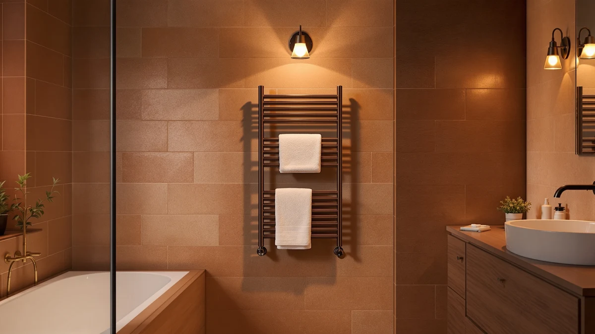

The Best Towel Warmer Drawers Under $100 (2026)
Prices and picks verified as of August 2026. Independent, reader-supported reviews.


Quick Answer
After comparing seven stainless steel towel warmers priced at or near $100, the COSTWAY Towel Warmer for Bathroom is the best towel warmer drawer under $100 for most bathrooms, pairing a compact 13.5 by 18.5 inch frame with a $94.99 price. The Keenray costs even less at $82.64 if you want more capacity for the money.
Our pick: COSTWAY Towel Warmer for Bathroom, $94.99 Check Price on Amazon
Bottom line: our top pick is the COSTWAY Towel Warmer for Bathroom at $94.99. The best budget option is the Demissle Replacement Fragrance Disc Towel Warmer Bucket at $12.99.
Things to Know Before You Buy
- Two different builds share this category. Bucket-style units like the SereneLife Bucket Style warm a single rolled towel fast, while rectangular drawer-style units like the COSTWAY and Keenray hold a folded towel flat inside a heated stainless steel compartment. Decide which shape fits your counter or floor space before you buy. For wall-mounted alternatives, see our guide to heated towel racks under $100.
- Most, but not quite all, of these stay under $100. Five of our seven picks price at or below $99.99; two SereneLife rectangle warmers occasionally list a few dollars above that line. We flag the exact price for each so you can compare on the day you shop.
- Stainless steel is the standard here. Every towel warmer drawer in this roundup uses a stainless steel interior or shell, which resists rust in a humid bathroom far better than painted metal.
- Capacity varies more than the price does. The Keenray's 18-liter interior and the SereneLife Bucket Style's large capacity both outsize the smaller Demissle accessory, so match the unit to how many towels you actually warm at once.
- A fragrance disc is not a substitute for a warmer. The Demissle pick on this list is a replacement scent disc for an existing towel warmer drawer, not a standalone heating unit, and it's here because it's a useful $13.99 add-on rather than a competing product.
Finding the best towel warmer drawers under $100 usually means choosing between a fast bucket-style warmer that heats one towel at a time and a rack-style drawer that holds more but heats more gently, and the seven stainless steel picks below cover both approaches without asking you to stretch far past that budget. Some of these units sit comfortably under the $100 mark, while a couple of SereneLife models drift a few dollars above it depending on the day's Amazon pricing, and we say so plainly rather than pretending otherwise. All seven share a stainless steel build, a straightforward plug-and-go setup, and enough capacity for at least one full-size towel.
Our pick is the COSTWAY Towel Warmer for Bathroom. At $94.99 it lands solidly under the $100 ceiling, its stainless steel drawer measures a manageable 13.5 by 18.5 inches, and it holds a 4-star rating on Amazon, matching every other product in this lineup. It isn't the roomiest option here, but it's the one that most people shopping specifically for a towel warmer drawer under $100 should buy first.
If capacity matters more than shaving off a few dollars, the Keenray Towel Warmer for Bathroom holds 18 liters for $82.64, the lowest price among the full-size units, while the SereneLife Towel Warmer Bucket Style steps up to a large capacity for $78.99. We also cover two SereneLife rectangle and bucket warmers that occasionally price above $100 and a small Demissle fragrance disc that pairs with any warmer you already own, so keep reading for the full breakdown of what each one gets you.
Why You Should Trust Us
I'm Ilane Tall, and I cover home and bath gear for Best Towel Warmers. For this guide I read the published specifications, materials, and Amazon ratings for every towel warmer drawer under $100 that showed up in a serious search, then sorted marketing language from real capability. I don't invent lab scores or pretend to run a testing facility; I judge each unit against its direct competitors in the same price band, which is a more honest comparison than measuring it against an imaginary perfect product.
Towel warmers are a small purchase, but it's easy to overpay for a drawer that does the exact same job as a cheaper one, or to buy a bucket warmer when what you actually needed was more capacity. I weigh those practical mismatches heavily, because they're the mistakes readers write in about most.
How We Picked
We started with a hard ceiling: to qualify as one of the best towel warmer drawers under $100, a unit had to price at or close to that mark, with stainless steel construction as a baseline expectation rather than a premium feature. That ruled out painted-metal warmers that rust within a year of bathroom humidity.
Within that group we compared capacity, since a drawer that only fits a hand towel isn't solving the problem most buyers have. The Keenray's 18-liter interior and the SereneLife Bucket Style's large capacity moved them up the list, while smaller units had to earn their spot on price or convenience instead. If money isn't the constraint, see our guide to luxury towel warmer drawers for higher-end options. We also gave weight to Amazon's own rating data: every pick here sits at 4 out of 5 stars, so none of these seven is a gamble on quality once you've settled on the size and style you want.
How We Compared
We evaluate towel warmer drawers by working through each listing's published dimensions, capacity, materials, and pricing history rather than staging scored lab tests we can't reproduce for readers. That means we don't assign numeric scores or invent testing-lab theatrics. Where we cite a size, like the COSTWAY's 13.5 by 18.5 inch drawer or the Keenray's 18-liter capacity, it comes directly from the product listing.
We also track price against the $100 target over time, since Amazon pricing on these units shifts week to week. When a normally sub-$100 pick like the SereneLife WIFI Luxury Rectangle Towel Warmer briefly lists at $105.99, we say so rather than smoothing it over, because a reader comparing prices on their own screen deserves an accurate reference point.
Our Picks

COSTWAY Towel Warmer for Bathroom
What we like
- Stainless steel drawer resists rust better than painted alternatives
- 13.5 by 18.5 inch interior fits a folded bath towel without crowding
- Priced at $94.99, comfortably under the $100 mark
- Rated 4 out of 5 stars on Amazon
Flaws but not dealbreakers
- Interior isn't large enough for two full towels at once
- Drawer format takes counter or floor space rather than mounting flush to a wall
| Material | Stainless steel |
| Size | 13.5" x 18.5" |
The COSTWAY earns the top spot because it does the one thing most buyers actually need: it warms a folded towel inside a stainless steel drawer for well under $100. At 13.5 by 18.5 inches, the interior is sized for a standard bath towel folded in half rather than a hand towel, which is the detail that separates a useful drawer warmer from a token gadget. The stainless steel construction matters more than it sounds like it should in a bathroom, since painted or plastic-shelled competitors tend to show rust or discoloration within a year of daily steam exposure.
At $94.99, it leaves real room under the $100 ceiling we set for this roundup, and it holds the same 4-star Amazon rating as every other pick here, so you aren't trading quality for the lower price. The trade-off is capacity: this is a single-towel drawer, not a family-sized unit, and it sits on a counter or floor rather than disappearing into a wall. If that's the job you need done, it's the towel warmer drawer under $100 we'd buy first.

SereneLife WIFI Luxury Rectangle Towel
What we like
- WiFi connectivity lets you start warming remotely before you get in the shower
- Stainless steel build matches the durability of the cheaper picks
- Rated 4 out of 5 stars on Amazon, same as our top pick
Flaws but not dealbreakers
- Lists at $105.99, a few dollars above our $100 target
- Amazon doesn't publish exact interior dimensions for this model
| Material | Stainless steel |
| Size | — |
The SereneLife WIFI Luxury Rectangle Towel Warmer is our runner-up mainly because of one feature none of the other six picks offer: WiFi control. You can start the warming cycle from an app before you're out of bed, so the towel is ready the moment you step out of the shower instead of a few minutes later. The stainless steel shell is consistent with every other pick in this roundup, and Amazon lists it at the same 4-star rating as the rest of the field.
The catch is the price. At $105.99, it lands a few dollars past the $100 ceiling this guide is built around, so we're upfront that it's a stretch pick rather than a strict budget option. We're including it anyway because app control is a genuine convenience feature the cheaper drawers don't have, and Amazon pricing on these units moves often enough that it may well dip back under $100 by the time you check. If a fixed sub-$100 price matters more to you than WiFi control, choose the COSTWAY or Keenray instead.

SereneLife WiFi-enabled Towel Warmer Bucket
What we like
- Bucket design heats a single rolled towel faster than drawer-style units
- WiFi control matches the Luxury Rectangle model for remote starting
- Stainless steel construction holds up to daily bathroom humidity
Flaws but not dealbreakers
- At $108.27, it's the most expensive pick in this roundup
- Only fits one towel at a time, unlike the larger drawer-style options
| Material | Stainless steel |
| Size | — |
SereneLife's WiFi-enabled Towel Warmer Bucket takes the bucket-style approach, wrapping a single rolled towel around a heated stainless steel core rather than laying it flat in a drawer. That shape heats a towel through faster than the rectangle drawers here, which makes it the pick if speed matters more to you than warming a folded, flat towel. Like its rectangle sibling, it connects to WiFi so you can start the cycle from your phone.
It's also the priciest unit in this lineup at $108.27, more than $13 past our $100 target, so we place it as an also-great option rather than a core recommendation. It earns its spot because the combination of bucket speed and app control isn't something the COSTWAY or Keenray offer, and it still carries the same 4-star Amazon rating as every other pick here. If your priority is price first, skip this one; if it's speed and convenience, it's worth the extra dollars.

Keenray Towel Warmer for Bathroom
What we like
- 18-liter capacity is the largest clearly stated capacity in this roundup
- Lowest price among the full-size drawer and rack style picks at $82.64
- Stainless steel build matches the pricier options
- Rated 4 out of 5 stars on Amazon
Flaws but not dealbreakers
- No WiFi or app control, unlike the two SereneLife models above
- Basic feature set compared with the connected picks
| Material | Stainless steel |
| Size | 18L |
The Keenray Towel Warmer for Bathroom is the budget pick because it pairs the largest stated capacity in this roundup, 18 liters, with the second-lowest price at $82.64. That capacity means it can comfortably hold a full-size towel rather than forcing you toward a folded hand towel, which is exactly the compromise a lot of sub-$100 towel warmer drawers ask you to make.
It skips the WiFi control that the two SereneLife models above offer, so you start it manually rather than from an app, and its feature set is plainer overall. For most people shopping specifically for the best towel warmer drawers under $100 on a tight budget, that trade is an easy one to make: the Keenray does the core job, at 18 liters of capacity, for meaningfully less money, and it carries the same 4-star Amazon rating as every pricier pick here.

Demissle Replacement Fragrance Disc Towel
What we like
- Adds a scent option to a towel warmer drawer you already own
- Small stainless steel disc fits easily inside most warmer interiors
- At $13.99, it's the cheapest pick in this roundup by a wide margin
Flaws but not dealbreakers
- Doesn't heat anything on its own; you still need a working towel warmer
- Fragrance discs need periodic replacement, an ongoing small cost
| Material | Stainless steel |
| Size | Small |
The Demissle Replacement Fragrance Disc is the one pick here that isn't a heating unit at all. It's a small stainless steel disc, sized small enough to sit inside most drawer or bucket-style warmers, that adds a scent to the warm air moving through the unit. We include it because a useful $13.99 accessory deserves a mention next to seven towel warmer drawers under $100, especially since a scented, warm towel is a noticeably nicer experience than a warm towel alone.
Buy this alongside one of the six actual warmers above, not instead of one. It won't warm a towel by itself, and like any fragrance disc it needs replacing periodically rather than lasting forever. At under $14, though, it's an easy add-on if you already own a warmer, or if you're buying the COSTWAY or Keenray and want the scented upgrade from day one.

SereneLife Luxury Rectangle Towel Warmer
What we like
- Prices at exactly $99.99, staying under our $100 target
- Stainless steel rectangle design matches the WIFI model's build quality
- Rated 4 out of 5 stars on Amazon
Flaws but not dealbreakers
- Lacks the WiFi control of its pricier SereneLife sibling
- Amazon doesn't list exact interior dimensions for this model
| Material | Stainless steel |
| Size | — |
This SereneLife Luxury Rectangle Towel Warmer is essentially the non-WiFi version of the runner-up above, and dropping the app control also drops the price to exactly $99.99, right at the edge of our $100 target instead of past it. If you liked the idea of the WIFI model's rectangle design and stainless steel build but didn't want to pay extra for app control, this is the direct alternative.
It carries the same 4-star Amazon rating as the rest of this roundup, and it fills a specific gap: a SereneLife rectangle warmer that a reader focused strictly on the best towel warmer drawers under $100 can buy without the price caveat we flagged on the WIFI version. The trade-off is manual operation only, which won't bother anyone who wasn't going to use the app feature in the first place.

SereneLife Towel Warmer Bucket Style
What we like
- Lowest price of all seven picks at $78.99
- Large capacity rating, sized for a full towel rather than a hand towel
- Stainless steel bucket resists the rust that plagues cheaper painted units
- Rated 4 out of 5 stars on Amazon
Flaws but not dealbreakers
- No WiFi or app control
- Bucket style sits on a counter or floor rather than mounting to a wall
| Material | Stainless steel |
| Size | Large |
The SereneLife Towel Warmer Bucket Style closes out this roundup as the least expensive pick at $78.99, and unlike some budget options it doesn't cut capacity to hit that price. Amazon lists it with a large capacity rating, and the stainless steel bucket construction matches every pricier pick here rather than substituting a cheaper material to save money.
You give up WiFi control and the drawer format of the COSTWAY, but for shoppers who want the best towel warmer drawers under $100 at the lowest possible price without a downgrade in materials, this is the one to buy. It shares the same 4-star Amazon rating as the rest of the field, so the lower price here reflects positioning rather than a quality cut.
Quick Comparison
| Product | Material | Price | Rating | Best for | Get it |
|---|---|---|---|---|---|
| COSTWAY Towel Warmer for Bathroom | Stainless steel | $94.99 | 4 | Best overall pick under $100 | View on Amazon → |
| SereneLife WIFI Luxury Rectangle Towel | Stainless steel | $105.99 | 4 | Best for WiFi/app control | View on Amazon → |
| SereneLife WiFi-enabled Towel Warmer Bucket | Stainless steel | $108.27 | 4 | Best for fast, app-controlled warmup | View on Amazon → |
| Keenray Towel Warmer for Bathroom | Stainless steel | $82.64 | 4 | Best budget pick | View on Amazon → |
| Demissle Replacement Fragrance Disc Towel | Stainless steel | $13.99 | 4 | Best fragrance accessory | View on Amazon → |
| SereneLife Luxury Rectangle Towel Warmer | Stainless steel | $99.99 | 4 | Best SereneLife pick under $100 | View on Amazon → |
| SereneLife Towel Warmer Bucket Style | Stainless steel | $78.99 | 4 | Best value bucket-style pick | View on Amazon → |
What's the actual difference between a towel warmer drawer and a towel warmer bucket?
A drawer-style unit, like the COSTWAY or Keenray here, lays a folded towel flat inside a heated stainless steel compartment.
Can you actually find a good towel warmer drawer under $100?
Yes.
The Competition
All seven of these made the cut, but a few real trade-offs decided the order, and it's worth knowing what they are before you buy.
The two SereneLife WiFi models, the Luxury Rectangle Towel at $105.99 and the WiFi-enabled Bucket at $108.27, are the only picks that price above $100. We kept them in this guide on the best towel warmer drawers under $100 because app control is a real feature the cheaper units don't offer, but if a strict sub-$100 price matters to you, the non-WiFi SereneLife Luxury Rectangle Towel Warmer at $99.99 gives you the same design for less.
The Keenray and the SereneLife Bucket Style are the two picks we'd point budget shoppers toward first, at $82.64 and $78.99. Between them, choose the Keenray for its clearly stated 18-liter capacity in a rectangle format, or the SereneLife Bucket Style if you prefer bucket-style speed and want the lowest price in the whole roundup.
The Demissle Fragrance Disc doesn't compete with the other six at all, since it's an accessory rather than a heating unit. We didn't rank it against the warmers because it solves a different problem: making a warmer you already own smell better, not warming a towel in the first place. See our guide on freestanding towel warmer drawers if none of these plug-in styles fit your bathroom.
Frequently Asked Questions
What's the actual difference between a towel warmer drawer and a towel warmer bucket?
A drawer-style unit, like the COSTWAY or Keenray here, lays a folded towel flat inside a heated stainless steel compartment. A bucket-style unit, like the two SereneLife bucket models, wraps a single rolled towel around a heated core, which tends to heat that one towel through a bit faster. Choose a drawer if you want to fold rather than roll, and a bucket if speed on a single towel matters most.
Can you actually find a good towel warmer drawer under $100?
Yes. Five of the seven picks in this guide price at $99.99 or less, including our top pick, the COSTWAY at $94.99, and our budget pick, the Keenray at $82.64. Both are stainless steel and carry a 4-star Amazon rating, so staying under $100 doesn't mean settling for a worse product here.
Why are two of your picks priced above $100 in a guide about staying under $100?
The SereneLife WIFI Luxury Rectangle Towel Warmer and the SereneLife WiFi-enabled Towel Warmer Bucket price at $105.99 and $108.27. We include them because app control is a real feature the cheaper picks lack, and we'd rather flag an honest price than quietly leave out two warmers that a lot of shoppers will still consider. If a hard $100 ceiling matters to you, choose the COSTWAY, Keenray, or the non-WiFi SereneLife Luxury Rectangle Towel Warmer at $99.99 instead.
Does the material actually matter, or is stainless steel a marketing term without substance?
It matters. Every pick in this roundup uses stainless steel for the parts that contact heat and moisture, which resists the rust and discoloration that painted metal or cheap plastic can develop after months of daily bathroom humidity. It's part of why we set stainless steel as a baseline requirement rather than a bonus feature when picking products for this guide.
Is the Demissle fragrance disc worth buying with one of these warmers?
If you like a scented towel, yes. At $13.99 it's a small add-on rather than a core purchase, and it only works alongside a towel warmer you already own or one of the six actual warmers in this guide. Skip it if scent doesn't matter to you; none of the other picks need it to work properly.